Paneles y acabados
Puertas CABMA hace una gran variedad de paneles decorativos combinando diseños y acabados: maderas naturales, DM lacado en cualquier color de su Carta RAL o chapa galvanizada con vinilo que imita madera o colores lisos.
Algunos ejemplos
Son solo una muestra. Pulsa en cada panel para verlo en grande y pregúntanos por el que te guste: te enseñamos el resto en nuestros puntos de venta.
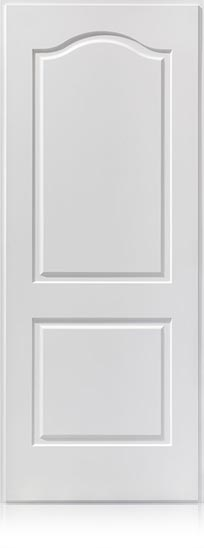
Panel lacado blanco pantografiado de 10 mm en DM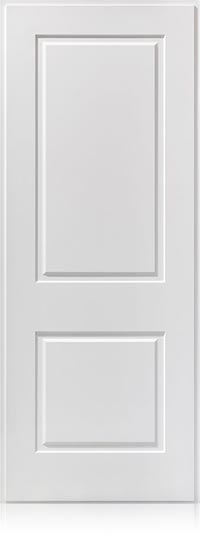
Panel lacado blanco pantografiado de 10 mm en DM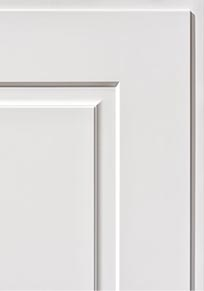
Detalle panel DM 10 mm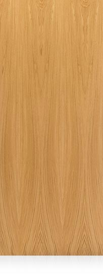
Panel liso roble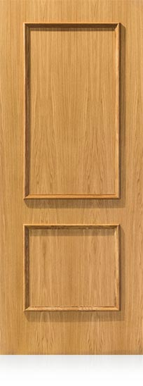
Panel liso roble dos cuadros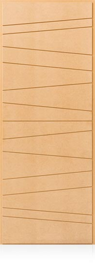
Panel pantografiado DM modelo especial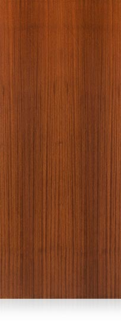
Panel liso sapelly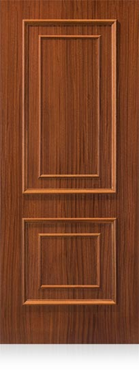
Panel liso sapelly 2 cuadros con moldura interior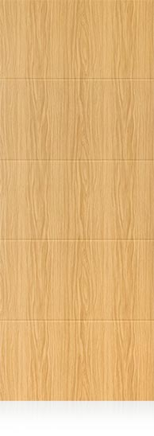
Panel vinilo exterior 4 rayas roble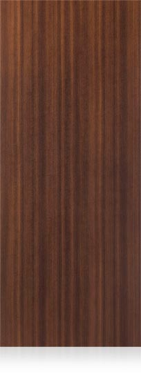
Panel vinilo exterior liso sapelly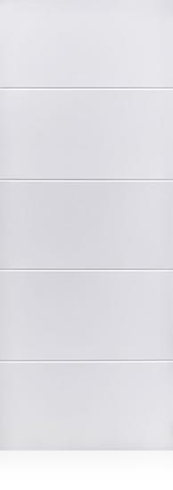
Panel vinilo exterior 4 rayas blanco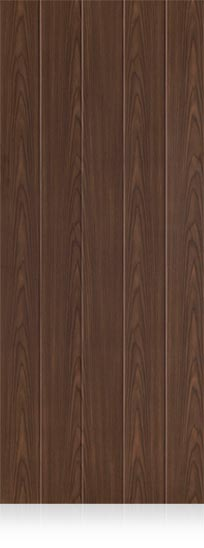
Panel vinilo exterior 4 rayas nogal


Elige el acabado con la puerta delante
En nuestra sede de Gijón tienes muestras de paneles, colores y perfiles.
- Dónde estamos
- Camino de la Xacona, 40
33392 Gijón (Asturias) - Teléfono
- 985 053 052
 Pulsa para ver la ruta
Pulsa para ver la ruta